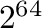

Next: Temporal data
Up: Importing data into a
Previous: Data selection
Contents
- Data is typically (but not always) stored in the rightmost columns
of a CSV file. Shift click to set the top left cell of the data. Columns
to the left will be marked as axes.
- Select ``axis'' in the Dimension dropdown to include a column as
an axis. Column data turns blue.
- Select ``ignore'' in the Dimension dropdown to exclude a column.
Column data turns red.
- Select ``data'' in the Dimension dropdown to treat a column as a
data column. Column data turns black.
- Select Type for included axis columns. Select one of three types:
- string
- most general type, data treated as is.
- value
- value data must be numerical, e.g. 1, 2, and not quoted
(as in ``1'', ``2'', etc.)
- time
- data must refer to date-time data. The format field may
be used to control interpretation of this data, though if this field
is left blank, Ravel will interpret the data format itself. Blank
format assumes data contains year/month/day/hour/minute/second separated
by some non-numerical character. If fewer than 6 numerical fields
present (from year to second), smallest units are set to minimum value
(0 or 1 respectively).
- The header row can be set by clicking in the left hand margin.
- The column names can be quickly populated from the header row
from a context menu.
- Multiple columns can have their types changed simultaneously by click dragging
to select, then changing the value on one of the columns.
- When more than one data column exists, it creates a ``horizontal
dimension''. This has a name, type and format string, just like a
regular axis column.
- The ``unique values'' row shows the number of unique values in
that column. This can be used to determine columns to exclude (via
the ``ignore'' option. This becomes important when the hypercube
size is too large to be imported. Ravel uses 64 bit numbers to index
into the data cube, and so if the hypercube has more than

elements, Ravel will not be able to import the data. The hypercube
size is rendered in red if that is the case. Good columns to ignore
are things like unique keys exported from a database.
Next: Temporal data
Up: Importing data into a
Previous: Data selection
Contents